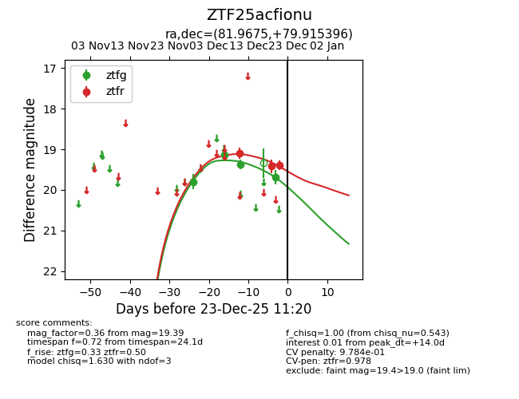
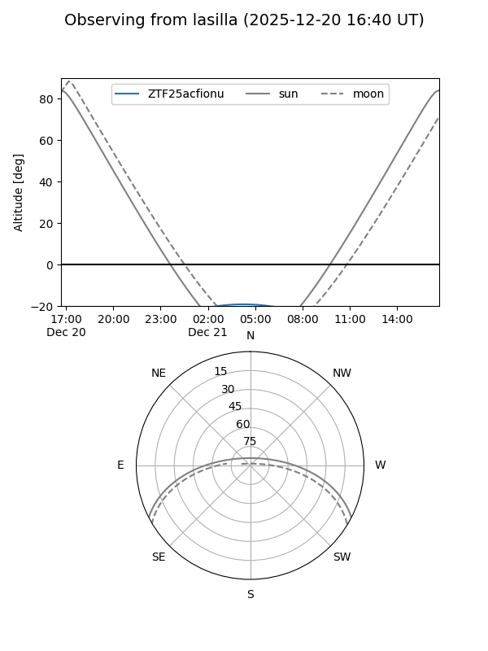
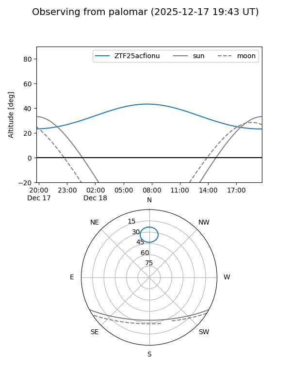

ZTF25acfionu
Target ZTF25acfionu at 2025-12-18 11:18
Aliases and brokers:
FINK: fink-portal.org/ZTF25acfionu
Lasair: lasair-ztf.lsst.ac.uk/objects/ZTF25acfionu
ALeRCE: alerce.online/object/ZTF25acfionu
alt names
ZTF25acfionu (ztf,fink_ztf)
Coordinates:
equatorial (ra, dec) = 81.9675,+79.91540
equatorial (HMS+DMS) = 05:27:52.21,+79:54:55.43
galactic (l, b) = (133.1814,+23.16410)
Photometry
last ztfg=19.37, ztfr=19.09
3 ztfg, 1 ztfr detections
Lightcurve

Visibility


Additional plots